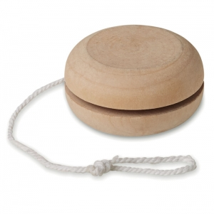

Em resumo
Relacione idade, atividade e acompanhamento com artigos de desenho, escrita, jogos, transporte e vestuário. A escolha começa pela criança e pelo contexto de utilização. As famílias apresentadas são possibilidades a avaliar, não artigos obrigatórios.
Contexto em imagens

Destinatários e necessidades
Crianças pequenas e adultos responsáveis
Nas primeiras idades, o adulto recebe e avalia o material antes de o disponibilizar. Um conjunto destinado à família não deve ser confundido com um objeto para a criança levar à boca ou usar sem acompanhamento.
Crianças em contexto pré-escolar e escolar
Desenho, escrita e atividades orientadas pedem materiais que correspondam à tarefa e às capacidades identificadas pela equipa educativa. O nível escolar ajuda a organizar a atividade, mas não certifica a adequação do artigo.
Clubes, festas e eventos familiares
A organização precisa de distinguir participantes de idades diferentes, acompanhantes e equipas. Um objeto para guardar uma recordação e um material usado durante uma oficina têm durações de uso distintas.
Ocasiões, locais e épocas
Oficina de desenho ou leitura
A ocasião destina-se a crianças e a adultos responsáveis e pode decorrer em contextos como sala de atividades ou biblioteca. O momento — na sessão preparada pela equipa — ajuda a enquadrar o objetivo de apoiar uma tarefa concreta, com materiais e instruções escolhidos para o grupo.
Atividade de clube ou evento familiar
A ocasião destina-se a participantes e a acompanhantes e pode decorrer em contextos como espaço de receção e área de atividade. O momento — antes da atividade e no momento de saída — ajuda a enquadrar o objetivo de distinguir o material utilizado no local da recordação levada para casa.
Projeto escolar
A ocasião destina-se a turmas e a equipa educativa e pode decorrer em contextos como escola ou espaço educativo. O momento — ao longo das sessões do projeto — ajuda a enquadrar o objetivo de permitir que os trabalhos e registos sejam guardados e retomados noutra sessão.
Famílias de artigos a avaliar
Quem desenha ou escreve numa atividade orientada
Objetivo
Uma caixa de lápis acompanha uma oficina de
desenho; um caderno permite continuar os registos noutra sessão. A escolha deve
acompanhar o gesto e o suporte utilizados, e não apenas o tema da impressão.
Famílias a avaliar
Lápis e instrumentos de escrita,
Cadernos, Blocos de desenho
Participantes em jogos e atividades de grupo
Objetivo
Um jogo pode apoiar uma dinâmica quando a equipa
explica as regras, gere as peças e acompanha a utilização. Um objeto com
finalidade de brincar deve ser avaliado nesse âmbito; chamá-lo brinde não
demonstra adequação.
Famílias a avaliar
Jogos, Artigos de atividade
Crianças que transportam trabalhos ou participam em clubes
Objetivo
Um saco pode reunir desenhos no final da sessão;
uma peça têxtil pode identificar um grupo. Verifique medidas, modo de vestir e de
transportar, evitando assumir que um tamanho serve todas as crianças.
Famílias a avaliar
Sacos, Peças têxteis
Utilização e distribuição
- Combine com a equipa a idade e o tipo de acompanhamento, antes de preparar os conjuntos.
- Separe o material entregue ao adulto do material colocado na zona da atividade. Mantenha os avisos e as instruções disponíveis depois de abrir.
- Distribua por grupo e tarefa, permitindo recusar o artigo. Uma atividade de leitura pode precisar apenas de material partilhado no local.
- Escolha se o desenho fica no caderno, no saco ou num cartão de acompanhamento; não precisa de repetir a mesma mensagem em todas as peças.
O que confirmar antes de escolher
- Identifique quem utiliza efetivamente o objeto: criança, adulto ou ambos. Faixas etárias de organização não substituem a idade indicada para o artigo.
- Num instrumento de desenho, observe pega, tampa, consumíveis e tipo de superfície de uso. Num saco ou peça de vestuário, confirme tamanho e forma de colocação.
- A finalidade de brincar e as características concretas merecem avaliação própria. A referência europeia trata brinquedos, não todos os artigos oferecidos a crianças. Fonte
Personalização e apresentação
- Num desenho para uma atividade, separe o espaço da mensagem do espaço onde a criança trabalha. Um logótipo grande pode reduzir a área útil do papel ou da peça.
- Meça o desenho na variante concreta e avalie a técnica com o material e o acabamento. Não cubra instruções, avisos ou informação necessária ao adulto.
Cuidados e limites
- Para brinquedos, a Comissão Europeia recomenda respeitar idade e capacidades, acompanhar a utilização e evitar peças pequenas destacáveis em brinquedos para menores de três anos. Estas orientações não certificam nenhum objeto ilustrado. Fonte
- Observe partes destacáveis, cordões e utilização previsível. A supervisão não torna adequado um artigo que não corresponda à criança ou às instruções. Para contacto direto com crianças pequenas, procure documentação específica em vez de deduzir aptidão pela forma.
- Brinquedos partidos ou com desgaste devem ser retirados da utilização, segundo a orientação europeia. Guarde as instruções e não deixe embalagens plásticas disponíveis para brincar. Fonte
Perguntas frequentes
Um artigo com um desenho infantil é adequado a qualquer idade?
Não. A apresentação não demonstra idade, composição ou segurança. Consulte a indicação do artigo e a utilização prevista com a equipa responsável.
Dar o artigo através de um adulto resolve todos os riscos?
Não. A entrega mediada permite explicar o uso, mas não substitui documentação, escolha adequada ou acompanhamento.
É preciso oferecer um brinquedo numa festa infantil?
Não. Um registo da atividade, um caderno ou nenhum objeto podem corresponder melhor ao objetivo. A proposta depende da ocasião, não de uma regra de oferta.